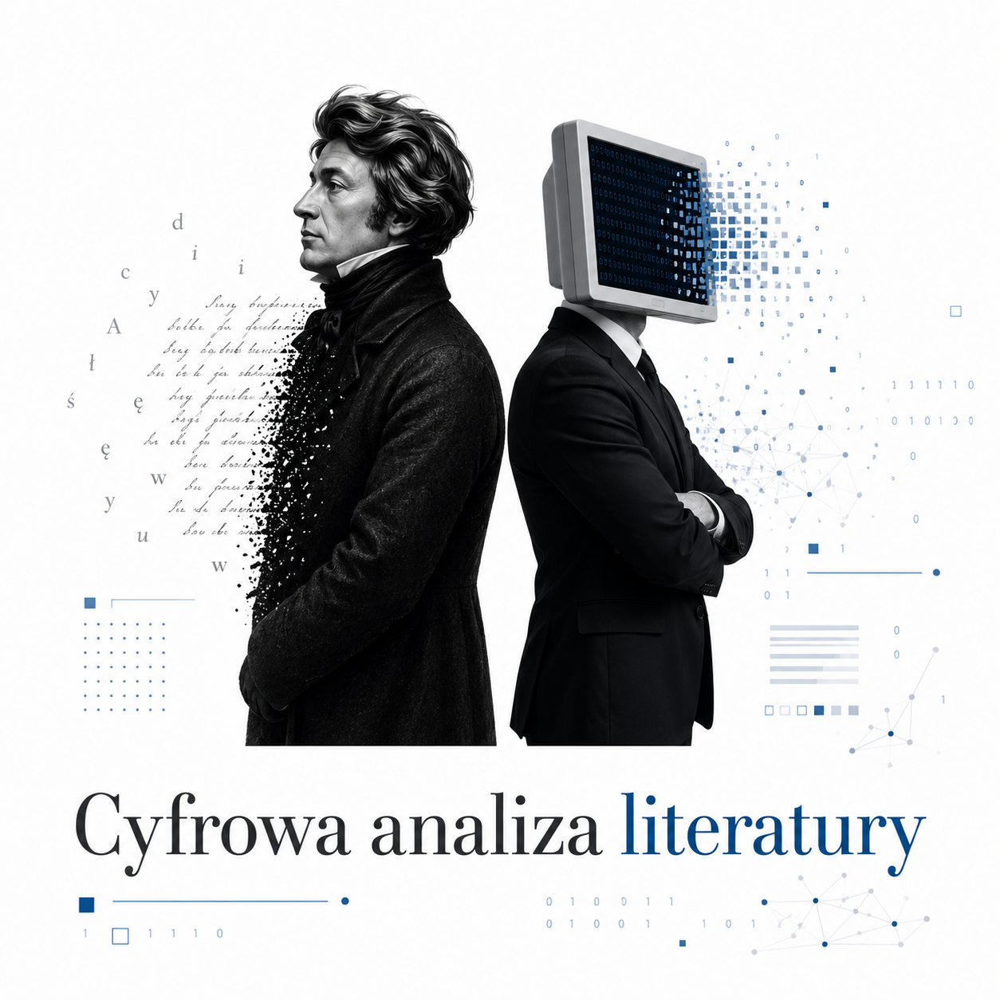

- średnia długość odcinka izosylabicznego,
- gęstość interakcji (średnia długość wypowiedzi jednej postaci),
- wektory ekspresji interpunkcyjnej (gęstość wykrzyknień i pytań)
- wskaźnik łamania wiersza, czyli procentowy udział linijek wypowiedzi, które nie kończą się znakiem interpunkcyjnym zamykającym strukturę składniową, w stosunku do wszystkich linijek (z wyłączeniem didaskaliów),
- wskaźnik referencji pierwoszoosobowej (gęstość zaimków osobowych i dzierawczych związanych z 1. os. l.poj.).

- postaci dramatu powinny zostać zapisane wielkimi literami, np. PUSTELNIK
- didaskalia powinny zostać umieszczone w nawiasach okrągłych albo wydzielone za pomocą znaku slash (ukośnik), np. (na stronie) albo / na stronie /.
Jak działa ten algorytm:
 Skrypt przelicza liczbę sylab dla każdego wersu na podstawie identyfikacji samogłosek, które w danej pozycji pełnią funkcję sylabotwórczą. Nie robi tego w 100% bezbłędnie — nie wykryje np., że kombinacja [ia] występująca na granicy morfemów (jak w wyrazie miniaparatura) utworzy 2 sylaby (stąd całe słowo będzie 7-sylabowe), ponieważ [i] — dość wyjątkowo jak na język polski (bo pomimo sąsiedztwa innej samogłoski z prawej strony) — będzie ośrodkiem osobnej sylaby. Nie wykryje także dyftongów takich jak [au] (por. tau-to-lo-gia, ale na-uka) lub [oi] (por. si-nu-soi-da, ale He-lo-i-sa). Błędy wynikające z takich (m.in.) wyjątków nie wpłyną znacząco na statystyki dla długich tekstów. Narzędzie nie wskazuje przypadków stychomytii; umożliwia natomiast wykluczenie ich z analizy ręcznie poprzez wprowadzenie znaku ++ przed konkretnymi linijkami tekstu.
Skrypt przelicza liczbę sylab dla każdego wersu na podstawie identyfikacji samogłosek, które w danej pozycji pełnią funkcję sylabotwórczą. Nie robi tego w 100% bezbłędnie — nie wykryje np., że kombinacja [ia] występująca na granicy morfemów (jak w wyrazie miniaparatura) utworzy 2 sylaby (stąd całe słowo będzie 7-sylabowe), ponieważ [i] — dość wyjątkowo jak na język polski (bo pomimo sąsiedztwa innej samogłoski z prawej strony) — będzie ośrodkiem osobnej sylaby. Nie wykryje także dyftongów takich jak [au] (por. tau-to-lo-gia, ale na-uka) lub [oi] (por. si-nu-soi-da, ale He-lo-i-sa). Błędy wynikające z takich (m.in.) wyjątków nie wpłyną znacząco na statystyki dla długich tekstów. Narzędzie nie wskazuje przypadków stychomytii; umożliwia natomiast wykluczenie ich z analizy ręcznie poprzez wprowadzenie znaku ++ przed konkretnymi linijkami tekstu.